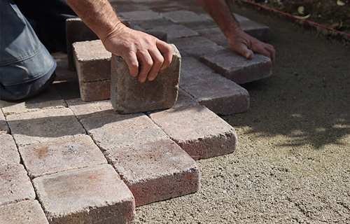
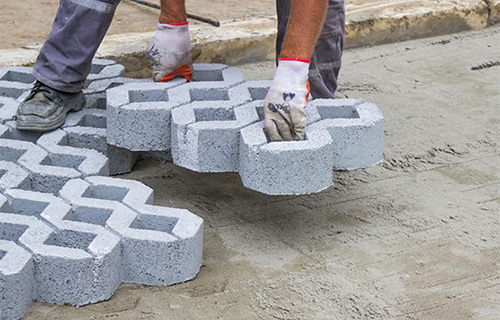

Térkő
A térkövezés ma már egy ház felújítása során szinte kihagyhatatlan folyamat akkor, ha az ott lakóknak fontos a praktikum és az esztétikum.
Érdekel
Viacolor
A térkő típusok között találunk formában, méretben, alapanyagban, színárnyalatban is többfélét, melyek tetszés és igény szerint összeállíthatóak.
Érdekel

Gyeprács
Sok ház esetében nincs megoldva, hogy az autó úgy tudjon behajtani a kertbe vagy a ház elé, hogy a pázsitban ne tegyen kárt.
Érdekel